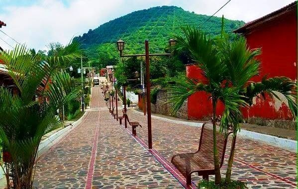

Reconocida por sus arrecifes y actividades como el buceo y el snorkel.
Es una de las pocas zonas coralinas del país y destaca por su riqueza marina
y sus paisajes costeros.

Ruta de las Flores
Recorrido turístico que incluye pueblos con tradición cultural,
gastronomía y festivales. Es especialmente visitada los fines de semana por su oferta gastronómica
y sus actividades culturales.